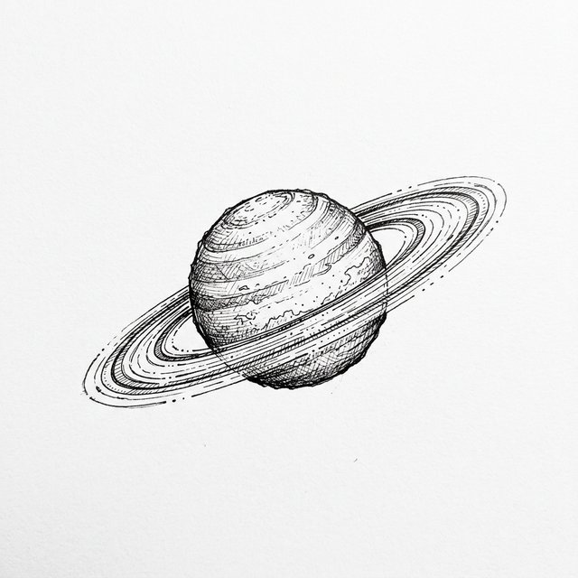

SOLAR X-RAY FLUX
A-CLASS
Background
Solar brightness. Higher classes mean more intense radiation bursts.

Tracking high-priority solar events and planetary magnetic changes in real-time.
Last updated: Just now
Solar brightness. Higher classes mean more intense radiation bursts.
Magnetic field stability. High values signal potential grid issues.
Speed of charged particles from the Sun hitting Earth's shield.
Dark solar regions. More spots usually lead to more powerful flares.
High-energy protons. Important for satellite and astronaut safety.
Likelihood of seeing the Northern Lights in your region.
...